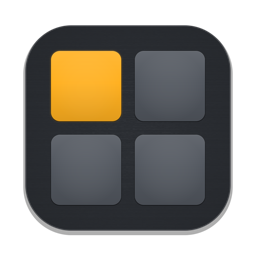

wav404
Load samples onto your SP-404SX card, on macOS, Windows and Linux.
A free, open replacement for the discontinued SP-404SX Wave Converter, which only runs on Intel Macs through Rosetta and on old versions of Windows.
All releases · Linux & build from source · Command-line tool